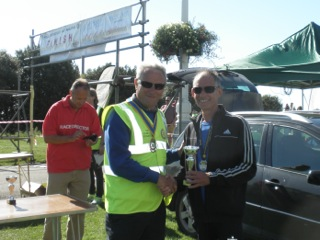

James Graham contested the Folkestone Half on 27 September, from which he reports as follows: "I ran the Folkestone half marathon yesterday on a gloriously sunny but very breezy day. The route is a mainly flat out and back between Folkestone and Hythe along the sea wall, with great views of the English Channel as far as France. The outward leg was fast as it was ‘wind assisted’ but the pay back was on the return leg which was a real grind, only to be compounded by a steep climb back to the top of the Leas up the Road of Remembrance. Not a road that I will forget in a hurry.
I came 15th overall and managed to win the M60 in a PB time of 1:27:31."
The full results are here.
Jim and Heather Fitzmaurice were also busy at the weekend, running the famous Half at Barns Green. Jim says: "...won silver medal at barns green heather was 4 th 1 40." Their results were:
| 188 | 1:40:04 | Heather Fitzmaurice | Sevenoaks AC | Vet Ladies 45-49 | 1272 | 1:39:03 | 70.99 |
| 661 | 2:02:06 | James Fitzmaurice | Sevenoaks AC | Vet Men 70+ | 1273 | 2:01:05 | 67.96 |
The full results are here.